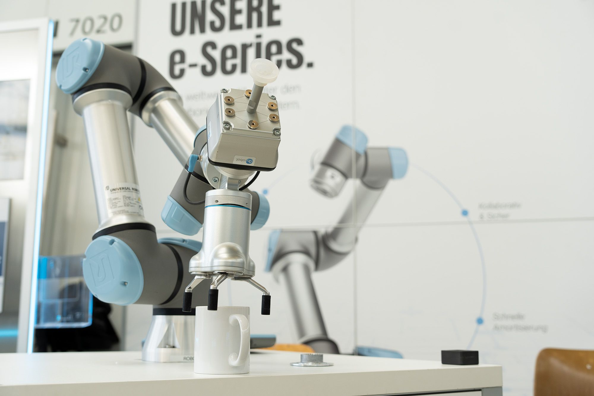
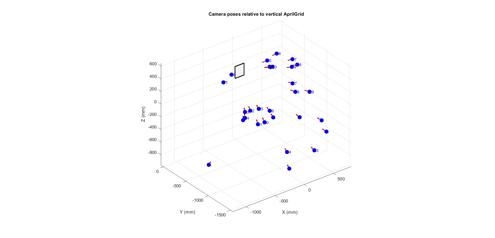
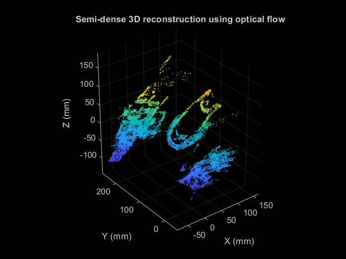

M.Sc. Mechanical Engineering student in the Robotics and Mechatronics track at Politecnico di Milano. Currently working as a Research Assistant at Fraunhofer IPK in Berlin on multimodal anomaly detection and failure monitoring for robotic manipulation.
A short overview of my academic and research background.
I am an M.Sc. student in Mechanical Engineering at Politecnico di Milano, specializing in Robotics and Mechatronics. My academic and research interests are centered on intelligent robotic systems, autonomous navigation, robotic manipulation, machine learning, and control systems.
My current research focuses on multimodal anomaly detection for robotic manipulation, where visual information and force-based signals are used to improve failure monitoring in robotic tasks. I am particularly interested in developing reliable robotic systems that can perceive, reason, and operate safely in dynamic environments.
Main areas that define my academic and professional direction.
Highlighted academic and research projects in robotics, autonomous systems, and machine learning.

Ongoing research project focused on anomaly detection and failure monitoring in robotic manipulation tasks. The project investigates how machine learning, Vision-Language Models (VLMs), and Vision-Language-Action (VLA) models can be used to improve the reliability of robotic systems during manipulation.
The main idea is to fuse time-series sensor data, such as force and robot signals, with visual information extracted through computer vision and vision processing techniques. By combining these multimodal sources, the system aims to detect more subtle and complex manipulation failures that may not be easily identified from a single data modality.
Developed a complete ROS 2-based autonomous navigation pipeline for a TurtleBot3 Burger robot in the Gazebo turtlebot3_house environment. The project included indoor environment mapping using SLAM Toolbox, occupancy-grid preprocessing, obstacle inflation, and custom A* path planning on the generated map.
The navigation system was implemented without relying on the Nav2 planner and controller servers. Instead, the planned path was converted into map-frame waypoints and executed using a custom feedback controller. The system was also extended with laser-based unexpected obstacle detection, map updating, and online replanning, allowing the robot to adapt its trajectory while maintaining collision-free navigation toward the goal.
Developed and solved a nonlinear vehicle optimal control problem for obstacle avoidance, including direct and indirect methods, tracking control, EKF state/parameter estimation, and MPC.
Bachelor thesis project on path planning and simulation of a three-wheel omni-directional mobile robot using ROS, Gazebo, Python, and the BUG2 algorithm.


Developed a MATLAB-based computer vision pipeline for 3D measurement and reconstruction. The project started with camera calibration using the MATLAB calibration toolbox, followed by AprilGrid-based detection to estimate the camera position and orientation across video frames.
Using the estimated camera poses, visual features were processed and matched between frames to support stereoscopy-based reconstruction. The final output included camera trajectory visualization and semi-dense 3D reconstruction of the observed scene.
Applied Bayesian optimization methods for robot control, with a focus on PID tuning and performance improvement in control tasks.
Research, teaching, and industrial experience.
Conducting research on machine learning methods for robotic manipulation, with a focus on anomaly detection, failure monitoring, multimodal data, and experimental robotic systems.
Worked on robotic mechanism design, mobile robot navigation, ROS-based simulations, omnidirectional robot motion, and control optimization.
Assisted in Computer Programming with C++, Engineering Mathematics with MATLAB, and Automatic Control Laboratory.
Designed and analyzed industrial components using SolidWorks and ANSYS Mechanical, contributing to mechanical design and prototyping activities.
Journal and conference publications.
Progress in Computational Fluid Dynamics, 2026
A. Omrani, A. Shateri, A. Goligerdian, H. Majidi, S.B. Hosseini, S. Aminian, and M. Hafezi.
DOI: 10.1504/PCFD.2026.152122
5th International Conference on Advanced Engineering Technologies, Turkey, 2024
A. Omrani, M.M. Davoudi, and M.R. Haghjoo.
32nd Iranian Association of Mechanical Engineers International Conference, 2024
A. Omrani, M.M. Davoudi, and M.R. Haghjoo.
Selected academic achievements and recognitions.
Tools and technologies used in my academic, research, and engineering projects.
Feel free to contact me for research collaboration, PhD opportunities, or robotics-related projects.
I am always interested in discussing robotics, autonomous systems, machine learning for robotic manipulation, and research opportunities.